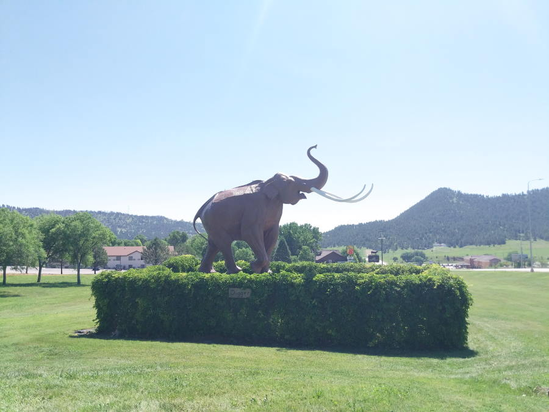
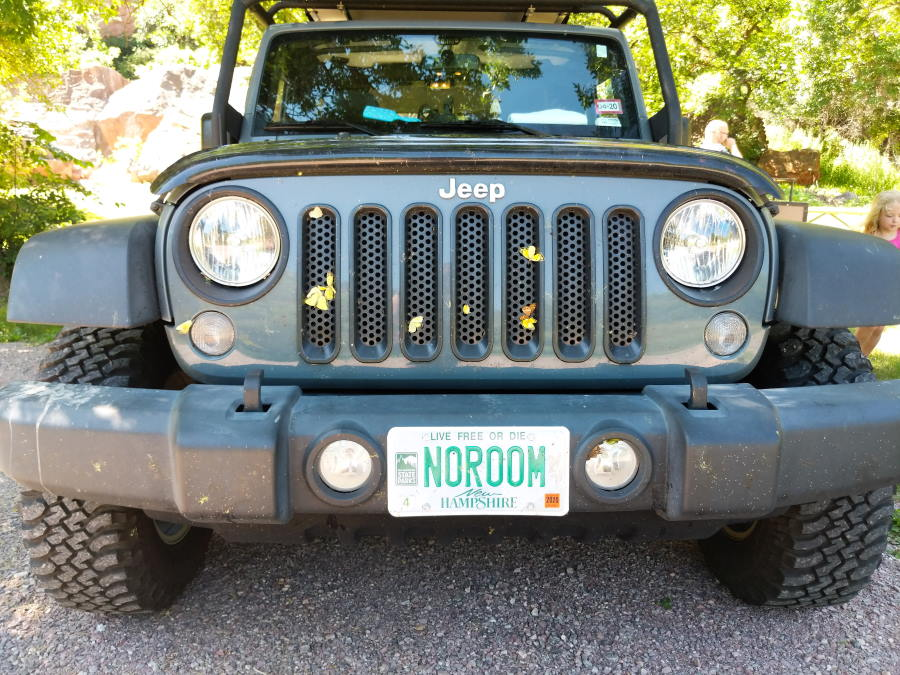

Leaving Nebraska
Heavy sleepersWe broke camp around 5:30am. By this point we had a pretty good system in place and it didn't take long to get the tent packed up. Somehow we managed to get both girls into their carseats without waking them up. Success!
Bridge leaving the Nebraska CampBecause the girls were still asleep we took this opportunity to take many photos of the Jeep and surrounding area. There were absolutley no vehicles on the road, talk about peaceful!
The Jeep isn't happy about the weight. Might as well get a lift kit soon!During the night there it seemed like there was a coal train going by every 20 minutes. We passed a lot of them on our way out. Full ones heading back into Nebraska, empty ones heading west to the coal plant.
 Each train must of had close to 40 cars attached
Each train must of had close to 40 cars attached
Did I mention how empty the roads were? We were able to get out and see for miles in all directions.
I'm king of the world!Alliance, Nebraska
Originally we were going to visit Alliance, Nebraska on the evening of day 4. But we are trying to get to camp in the daylight, so we are altering our schedules. Instead we got to Alliance around 7:30(Mountain Time). It was a cute little town, looked like they were either having or setting up for a town fair.
Such beautiful weatherThe first stop in Alliance was a bust, the breakfast joint we wanted to eat at was closed for a few days. Fun Fact, the back of the Jeep is hanging low, which means when a Parking lot has a dip at the entrance the cargo shelf gets dragged on the pavement. Only happened twice so far, but sure made me cringe.
Next was Newberry's Ground cafe. We each had a coffee and the girls a cup of milk. The Breakfast Burritos weren't bad, we also got a bagel to share and two Sausage, Egg, sandwhiches.
Where's my food!The next stop in Alliance was at Carhenge, it was a tourist attaction mimickingthe british stone henge. Very neat, but there were swarms of black flies out. We very quickly got eaten alive, but it didn't stop the girls from exploring or Abigail from taking pictures of them.
Car Henge Car Henge
Car Henge
Sand Hills of Nebraska
We drove through an area of Nebraska that was covered in these rolling hills. We kept seeing signs for "Sand Hills" and looked it up. Apparently a lot of these hills were actually sand dunes that had prarie grass on them to keep them stable.
Sand HillsLunch in South Dakota
We stoped in Hot Springs, Nebraska for a quick lunch. At first we pulled into a Mamoth museum, but considering how busy it was and how close to the road we decided to move somewhere quieter. We drove through the down-town area and eventually came across a quiet little park with a swingset for the girls to play on.
 Hairy elephant! Hot Springs Police stationLunch has become a mix of different things that are left over the cooler. Whether its turkey & balogna sandwhiches, fruit, or pieces of left over lunchables. We had a few marshmellows after we ate. We paid the price for those later when Jenna threw up in her carseat.
Lunch time!Butterfly Murderer
The Jeep runs on fossil fuels, and the souls of butterflies. Driving through the prairies many butterflies decided to greet the Jeep with a hug. Everytime we stopped I tried to clean off as many as I could before Jenna or Thea saw them, but eventually they saw the butterfly graveyard on the front.
 Butterfly graveyard - No Room for hitchhikersCuster National Forest
Like all of our plans, everything had room for changes. We were going to head to "Everything Prehistoric" a dinosaur museum in Hill City, but the day was already running late. Instead fwe drove into Custer state Park and drove along the scenic bypass. We saw lots of prairie dogs & a wild buffalo. Jenna and Thea loved seeing the prairie dogs.
 Prairie Dogs!
Prairie Dogs!
There was so much more we wanted to see, but like always we felt the pressure of the clock. We didn't really have good signal, nor did we have a place to sleep tonight. We continued on the scenic bypass, skipping the tunnel in the mountain and headed back towards Hot Springs. On our way out we passed near the wildlife loop entrance and finally saw the heard of Buffalo. They were off in the distance, but it was still an amazing sight to see.
Because its easy, we decided to look at the nearest KOA. This one was a bit more then we are used to, both in size and price. Apparently because it was at the foot of Mount Rushmore, it was considered a restort, and had "resort prices". Our tentsite was still fairly affordable (when compared to a hotel). We had to drive back and forth between the tent sites and office a few times, some of the sites weren't exactly level.
Our first "Resort"!We decided to try the restaurant that was at the KOA, but we weren't impressed. The service wasn't that great, the food was "eh", and there was no Air Conditioning in the restaurant. But we didn't have to cook, so there's that.
 Not impressed, but we had full tummies.
Not impressed, but we had full tummies.
Upgraded from Towel boy
After dinner we went to the "Fun Zone" which included a splashpad and a water slide. Jenna wanted to go down the water slide, so I was upgraded from towel boy and allowed to play with the girls in the water. It was cold, but very refreshing on a hot day.
It went fast, Jenna had fun until she got dunked under water when we landed. Jenna was trying to convince me to run through the very cold water What a face!
What a face!
While we were playing in the splashpad, Abigail was doing laundry. After both girls got cold, we went to try and find her but she was nowhere to be found. Jenna was starting to get worried so we sat down at one of the nearby pavilions where they were doing a karoke event. Jenna begged me to let her sing "little B" but we needed to find Abigail first. "Little B" isn't actually a song name, its just what Jenna calls it.
After walking back and forth over the park, we decided to go get the Jeep and drive around to look for Abigail. When we walked pass a pair of bathrooms to head to the Jeep, Abigail pops out and says "Are you looking for me?" Little did we know, she was hiding in the bathrooms since it wasn't as humid as the laundry mat!
Side note: We had absolutley zero cell coverage. Our phones have access to 3 different networks, and none of them worked. The KOA WiFi wasn't working due to the amount of wireless devices connected to it.
Once we found Abigail, I was able to get my phone and find out what the "Little B" song actually was. It was "Meant to be" by BeBe Rexa, ft Florida Georgia Line. I added her name to the list, and we waited about 30 minutes. Finally it was Jennas turn to sing, and she stood up infront of 20 people to sing her version of "Little B".
She did great!Camp
Now we went back to camp to get ready for bed. By the time we got back to the Jeep all of the empty tent sites around us were full. We quickly setup the tent while Jenna and Thea made new friends with the neighbors. We re-packed the jeep, and got everyone in the Jeep for bed time. Tonight was supposed to be fairly clear, so we took half of the rainfly off and opened one of the moon roof flaps. It ended up being a nice relaxing night next to a bubbling stream.
Girls helping stake down the awning!The only downside of where we camped was how far away from the bathrooms it was. It wasn't too bad though, and allowed me to stop some photos of the sky.
Night sky over the bathroom area Girls in the tent getting ready for sleep